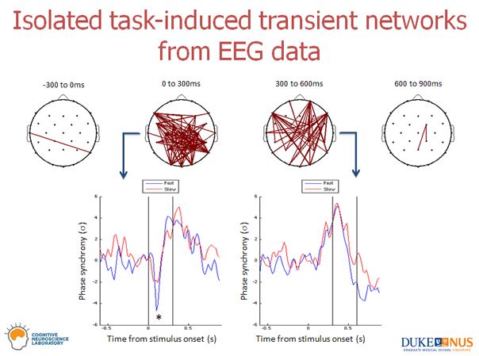
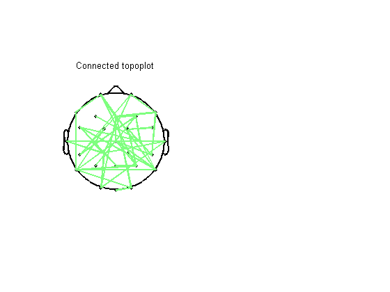
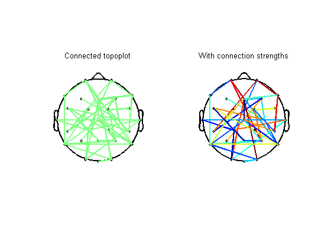

Connected Topoplot
This is a demonstration of using the topoplot_connect.m function. This function is only slightly modified from the original topoplot.m function which is part of EEGLAB. I have used EEGLAB v6.01b while modifying the topoplot function into topoplot_connect.
I used the topoplot_connect function while developing a method for isolating transient task-induced networks in the brain at Cognitive Neuroscience Lab, DUKE-NUS Graduate Medical School. The idea can be summarized visually in the below graphic.

If you are interested in learning more, or have comments, suggestions and/or requests for this function, please drop me an email praneeth@mit.edu
Contents
Usage and inputs
>> topoplot_connect(ds, EEG.chanlocs);
ds is the display strcture with the folowing fields:
- ds.chanPairs (required) - N x 2 matrix, with N being the number of connected channel pairs. For example, ds.chanPairs = [7, 12; 13 20]; specifies two connected channel pairs (7, 12) and (13, 20).
- ds.connectStrength (optional) - N x 1 matrix, a vector specifying connection strengths. If unspecified, then the connections will be rendered in a color at the center of the current colormap.
- ds.connectStrengthLimits (optional) - 1 x 2 matrix specifying minimum and maximum values of connection strengths to display. If it is not specified, then the minimum and maximum values from ds.connectStrength are used.
EEG.chanlocs is a structure specifying channel locations (same as in any other EEGLAB function - A sample is provided with this script).
Creating the basic display structure (ds.chanPairs)
Suppose you have connected channel pairs that you wish to display. I am going to create random channel pairs for illustration using an 'adjacency matrix' representation of the 'graph' of channel pairs that we wish to plot.
Create the adjacency matrix with random connections. Given 28 channels, total possible connections are 28C2 = 378. I will randomly connect ~10% of the channel pairs.
clear ds;
numChannels = 28;
a = rand(numChannels, numChannels);
adjMat = (a - triu(a)) >= 0.9;
Gather the adjacency matrix values into a Nx2 matrix, where N is the number of connected channel pairs
[ds.chanPairs(:, 1) ds.chanPairs(:, 2)] = ind2sub(size(adjMat), find(adjMat));
Specifying the channel locations
Locations of the EEG channels are determiined by the 'chanlocs' structure Once you acquire your EEG dataset and load it into EEGLAB, type chanlocs = EEG.chanlocs; at the command prompt to get the chanlocs strcuture. I am going to load a sample from our acquisition setup. Note that this may work for most setups with the same number of standard channels.
load pn_tc_demoData;
We are ready to plot!
figure; colormap('jet'); subplot(1, 2, 1); topoplot_connect(ds, sample_chanlocs); title('Connected topoplot');
Specify connection strength
Suppose you have a measure of connectivity (such as Phase Locking Value) between channel pairs and you wish to color code the connection strengths. For illustration, I am just going to use the values in the random matrix that was created earlier.
ds.connectStrength = a(adjMat);
subplot(1, 2, 2);
topoplot_connect(ds, sample_chanlocs);
title('With connection strengths');
